Performance evaluation
The performance of localization algorithms (for approximate and sub-pixel estimation of molecular positions) and post-processing methods can be evaluated by comparing the obtained molecular positions with the ground-truth positions. ThunderSTORM provides a tool for computing statistical measures related to the number of correctly detected molecules (TP, true positive detections), to the number of erroneous detections of non-existent molecules (FP, false positive detections), and to the number of missed molecules (FN, false negatives).
Localized molecular positions and ground-truth coordinates can be imported/exported to/from ThunderSTORM in various data formats, thus the performance can also be evaluated for other SMLM localization software.
Counting localized and missed molecules
The process of performance evaluation starts by pairing the localized molecules with the closest molecule in the ground-truth data. The numbers of correctly and incorrectly identified molecules are counted as follows. If the distance between the paired molecules is smaller than a user-specified radius, then the localization is counted as a TP detection and the localized molecule is associated with the ground-truth position. If the distance is greater than or equal to that radius, then the localization is counted as a FP detection. Ground-truth molecules which were not associated with the localized molecules are counted as FNs. With a growing density of molecules it becomes more important how the algorithm performs the matching. To solve the problem of finding the correct matching between localized molecules and the ground-truth data, the Gale-Shapley algorithm [1] is used. KD-trees [2] are employed for an effective implementation.
Precision and recall
Statistical measures related to the number of correctly or incorrectly detected molecules, or missed molecules, are the recall 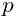 (also called sensitivity) and the precision 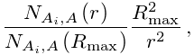 (also called positive predictive value) [4, 5, 3]. Their definitions are given by
| 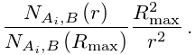 | 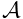 | |||
| 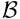 |
Recall measures the fraction of correctly identified molecules, and precision measures the portion of correctly identified molecules in the set of all localizations. The theoretical optimum is achieved for values of recall and precision both equal to 1.0.
F1 score
For purposes of comparison between multiple algorithms, it is convenient to combine precision and recall into a single measure of performance with some trade-off between both values. A traditional method for this applies the score [4, 3] defined by
| 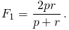 |
Values of the score close to zero indicate both bad recall and precision while values approaching 1.0 signify a good ratio between recall and precision.
Jaccard index
Another measure suitable for comparing similarity and diversity of sets of samples is the Jaccard index [4] defined by the formula
| 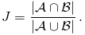 |
Here 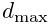 is the set of ground-truth molecular positions, 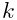 is the set of all molecular positions localized by processing the data, intersection 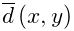 gives the number of true positive detections, union , and 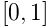 denotes the size of the set. The Jaccard index ranges from zero to one and a theoretical optimum is achieved for values of the Jaccard index equal to 1.0.
RMS distance
For all molecules identified as true positives, we also calculate the root-mean square distance between the ground-truth positions of the molecules and their localizations.
References
- [1] (1962) College admissions and the stability of marriage. The American Mathematical Monthly 69 (1), pp. 9–15. External Links: Document Cited by: Counting localized and missed molecules.
- [2] (1997) The Art Of Computer Programming. 3rd edition, Vol. 1, Addison-Wesley, Boston. Cited by: Counting localized and missed molecules.
- [3] (2011) Minimizing detection errors in single molecule localization microscopy. Optics Express 19 (4), pp. 3226–35. External Links: Document Cited by: Precision and recall, F1 score.
- [4] (2005) Introduction to Data Mining. Addison-Wesley Longman Publishing Co.. External Links: Link Cited by: Precision and recall, F1 score, Jaccard index.
- [5] (2010) Real-time computation of subdiffraction-resolution fluorescence images. Journal of Microscopy 237 (1), pp. 12–22. External Links: Document Cited by: Precision and recall.
![[LOGO]]()